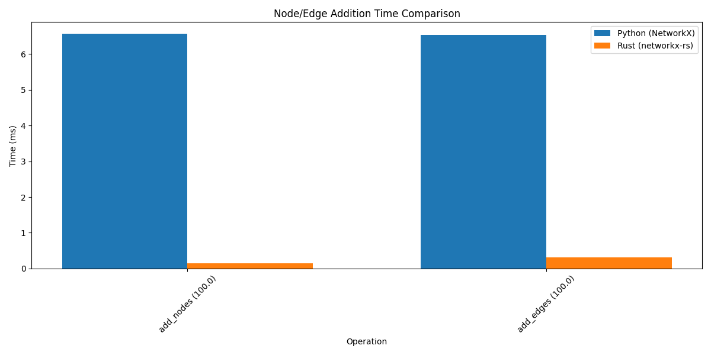

NetworkX vs networkx-rs Benchmark Comparison
Performance Summary
| Benchmark |
Python Time (ms) |
Rust Time (ms) |
Speedup (Python/Rust) |
| add_100_nodes |
6.57 |
0.14 |
45.42x |
| add_100_edges |
6.54 |
0.31 |
21.16x |
| digraph_creation_100_500 |
4.36 |
0.47 |
9.31x |
| graph_creation_100_500 |
4.4 |
0.5 |
8.86x |
| bfs |
2.09 |
0.41 |
5.11x |
| digraph_creation_500_2500 |
11.81 |
2.38 |
4.96x |
| graph_creation_500_2500 |
11.9 |
2.46 |
4.84x |
| digraph_creation_1000_5000 |
23.09 |
5.08 |
4.55x |
| graph_creation_1000_5000 |
20.99 |
4.82 |
4.36x |
| dfs |
1.33 |
0.51 |
2.59x |
| shortest_path |
0.59 |
0.69 |
0.85x |
Charts
Graph Creation Time Comparison
Graph Operation Time Comparison
Node/Edge Addition Time Comparison

Speedup (Rust vs Python)